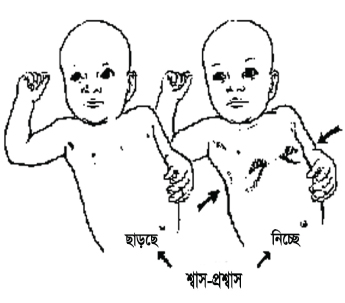

বাংলাদেশে শিশুমৃত্যুর এক-তৃতীয়াংশই ঘটে সংক্রামণজনিত কারণে। যদি ইউনিয়ন পর্যায়ে শিশুর সংক্রামণজনিত চিকিৎসা ব্যবস্থাপনা নিশ্চিত করা যায় তবে সংক্রামণজনিত শিশুমৃত্যু অনেকাংশে প্রতিরোধ করা সম্ভব।
শিশুর সংক্রামণ (বয়স ০-৫৯ দিনের মধ্যে) দ্রুত রক্তের মাধ্যমে শরীরে ছড়িয়ে পড়ে। ফলে শরীরের অঙ্গ প্রত্যঙ্গ জীবাণু দ্বারা সংক্রামিত হয়ে পড়ে এবং শিশু দ্রুত মারা যেতে পারে। সংক্রামণজনিত কারণে নবজাতকের মৃত্যু বেশিরভাগ ক্ষেত্রেই প্রতিরোধযোগ্য।
নবজাতকের অত্যাবশ্যকীয় পরিচর্যা, প্রসব পরবর্তী বিপদচিহ্ন সম্পর্কে অগ্রীম সতর্কতা ও সচেতনতা, জটিলতা মোকাবেলার প্রস্তুতি ও দ্রুত চিকিৎসা ব্যবস্থা নিশ্চিত করার মাধ্যমে শিশুর সংক্রামণজনিত মৃত্যু প্রতিরোধ করা সম্ভব।
ইউনিয়ন পর্যায়ের স্বাস্থ্যকর্মীরা নিন্মের লক্ষণসমূহের (ক্লিনিক্যাল বৈশিষ্ট্য) উপর ভিত্তি করে শিশুর (বয়স ০-৫৯ দিনের মধ্যে) সংক্রমণের শ্রেণীবিভাগ করবেন:
১. সংকটাপন্ন অসুস্থতা (ঈৎরঃরপধষ ওষষহবংং)
২. মারাত্মক সংক্রমণ (ঈষরহরপধষ ঝবাবৎব ওহভবপঃরড়হ)
৩. শুধুমাত্র দ্রুত শ্বাস (ঋধংঃ ইৎবধঃযরহম ধং ধ ঝরহমষব ড়ভ ওষষহবংং)
৪. স্থানীয় সীমিত সংক্রমণ (খড়পধষ ইধপঃবৎরধষ ওহভবপঃরড়হ)
(* উপরিল্লিখিত তারকা চিহ্নিত ৭টি লক্ষণ দেখা দিলে প্রথম ডোজ অ্যান্টিব্যায়োটিক প্রদান করে শিশুকে রেফার করতে হবে)
২. মারাত্মক সংক্রমণ: নীচের এক বা একাধিক লক্ষণ থাকলে তা খুব মারাত্মক অসুস্থতা হিসেবে বিবেচিত হবে
শিশুর সংকটাপন্ন অসুস্থতা চিহ্নিতকরণ: অসুস্থতার ইতিহাস, পর্যবেক্ষণ, শারীরিক পরীক্ষার মাধ্যমে শিশুর সংকটাপন্ন অসুস্থতা চিহ্নিত করতে হবে।
শিশুর মা যদি ইতিহাস দিয়ে থাকেন যে শিশুটি একেবারেই নড়াচড়া করে না বা অচেতন তবে তা মারাত্মক অসুস্থতা । এসব শিশুর ক্ষেত্রে মনে হতে পারে যে শিশুটি অস্বাভাবিক ঘুমে অচ্ছন্ন হয়ে আছে। শিশুটির কানের কাছে তালি বাজালে বা অন্য কোন উপায়ে শিশুটিকে উদ্দীপ্ত করলেও শিশুটি জাগে না। এক্ষেত্রে অতি দ্রুত শিশুটিকে নিকটস্থ উপজেলা স্বাস্থ্য কেন্দ্রে অবশ্যই রেফার করতে হবে ।
খিঁচুনী খুব মারাত্মক অসুস্থতার লক্ষণ। খিঁচুনীর ক্ষেত্রে শিশুর শরীরের বিভিন্ন অঙ্গপ্রত্যঙ্গ বা পুরো শরীর বারবার ঝাঁকি দেয়; চোখ উল্টে যেতে পারে, মুখ থেকে ফেনা বের হতে পারে এবং কিছুক্ষণের জন্য অজ্ঞান হয়ে যাবারও সম্ভাবনা থাকে। মাংসপেশীর সংকোচনের কারণে খিঁচুনীর সময় শিশুর হাত ও পা শক্ত হয়ে যায়। কোন কোন সময় শিশুর অসাড় হয়ে যাওয়া বা একদৃষ্টিতে তাকিয়ে থাকার মতো ঘটনাও ঘটে। শিশুটির খিঁচুনী আছে কি-না তা নিশ্চিত হওয়ার জন্য মায়ের কাছ থেকে সঠিক ও পূর্ণ ইতিহাস গ্রহণ করতে হবে।
মা যদি ইতিহাস দিয়ে থাকেন যে শিশু জন্মের পর ঠিকমত খেত কিন্তু বর্তমানে একেবারেই মায়ের বুকের দুধ টেনে খেতে পারছে না বা কাপে বা চামচে খেতে পারছে না তবে বুঝতে হবে যে শিশুটির বিপদ চিহ্ন আছে। এক্ষেত্রে পর্যবেক্ষণ করা প্রয়োজন যে মা শিশুটিকে ঠিকমত খাওয়াতে পারছেন কি-না।
শিশুকে খাওয়ানোর সময় আধা ঘন্টার মধ্যে যদি শিশুটি তিনবার বমি করে থাকে তবে তা শিশুর খুব সংকটাপন্ন অসুস্থতা হিসাবে চিহ্নিত হবে।
এ ধরনের শিশুদের মাথার তালু স্পর্শ করলে “স্পঞ্জ” এর মত নরম, স্ফীত অংশ অনুভূত হয় । ইতিহাস গ্রহণ করে তথ্য নিতে হবে যে শিশুটির উচ্চ তাপমাত্রা, খিটখিটে মেজাজ, দুধ খেতে না চাওয়া ইত্যাদি কোন লক্ষণ আছে কি না। যদি এমন কিছু থাকে তাহলে দ্রুত ব্যবস্থা গ্রহণ করতে হবে।
শিশুর ঠোঁট, জ্বিহবার অগ্রভাগ ও দাঁতের মাড়ি নীলাভ বর্ণ ধারণ খুব সংকটাপন্ন অসুস্থতার লক্ষণ। শিশুর মা’য়ের কাছ থেকে ইতিহাস গ্রহণ করতে হবে ও শিশুর ঠোঁট, জ্বিহবার অগ্রভাগ ও দাঁতের মাড়ি পর্যবেক্ষণ করে দেখতে হবে যে নীলাভ বর্ণ ধারণ করেছে কি-না এক্ষেত্রে নিকটস্থ উপজেলা স্বাস্থ্য কেন্দ্রে অবশ্যই রেফার করতে হবে ।
ইউনিয়ন স্বাস্থ্য ও পরিবার কল্যাণ কেন্দ্রে আগত শিশুর ওজন নিয়ে যদি দেখা যায় যে শিশুটির ওজন ১৫০০ গ্রামের কম হয় হবে নিকটস্থ উপজেলা স্বাস্থ্য কেন্দ্রে অবশ্যই রেফার করতে হবে।
শিশুর মারাত্মক সংক্রমণ চিহ্নিতকরণ: সংক্রমণের ইতিহাস, পর্যবেক্ষণ, শারীরিক পরীক্ষার মাধ্যমে শিশুর মারাত্মক সংক্রমণ চিহ্নিত করতে হবে।
নবজাতকের পাঁজর বা বুকের খাঁচা নরম বলে বুকের খাঁচার নিচের অংশে সামান্য পরিমাণ দেবে যেতে পারে, যা স্বাভাবিক। তবে দেবে যাবার মাত্রা তীব্র হলে তা সহজেই সনাক্ত করা যায়। শ্বাস গ্রহণের সময় শিশুর বুকের খাঁচার নিচের অংশ মারাত্মকভাবে দেবে যায় কি না লক্ষ্য করতে হবে (পাশের চিত্রের ন্যায়)। বুকের নিচের অংশ দেবে যাওয়া পর্যবেক্ষণ করার সময় নিশ্চিত হতে হবে, নবজাতকের বুকের নিচের অংশ পুরোপুরি খোলা এবং স্বাস্থ্যকর্মী তা স্পষ্ট দেখতে পান। এছাড়া এই পর্যবেক্ষণের সময় শিশুকে অবশ্যই শান্ত থাকতে হবে। শান্ত অবস্থায় শ্বাস গ্রহণের সময় শিশুর বুকের খাঁচার নিচের অংশ মারাত্মকভাবে দেবে গেলে বুঝতে হবে তা খুব মারাত্মক সংক্রমণের লক্ষণ।
শরীরের তাপমাত্রা ৩৫.৫০সে. বা ৯৫.৯০ফা. নীচে নেমে গেলে তাকে নিন্ম তাপমাত্রা (হাইপোথার্মিয়া) বলে। নবজাতকের উষ্ণতা বজায় রাখতে প্রয়োজনীয় ব্যবস্থা না নিলে জন্মের পরপরই নবজাতকের নিন্ম তাপমাত্রা (হাইপোথার্মিয়া) হতে পারে। অপরিণত বা কম জন্ম ওজনের নবজাতকের হাইপোথার্মিয়া হওয়ার সম্ভাবনা বেশি। এছাড়া ঘরের তাপমাত্রা কম থাকলে, নবজাতকের শরীর ঠিকমত না মুছলে কিংবা ঠা-া বা ভেজা কিছুর সংস্পর্শে থাকলে, ঠা-া দেয়াল বা জানালার কাছে রাখলে নবজাতকের নিন্ম তাপমাত্রা হতে পারে। তবে সাধারণত এক্ষেত্রে তাপমাত্রা ৩৫.৫০ থেকে ৩৬.৫০সে. বা ৯৫.৯০ফা. থেকে ৯৭.৭০ফা. এর মধ্যে থাকে। এক্ষেত্রে নবজাতকের তাপমাত্রা সঠিকভাবে নিরুপণ করতে হবে এবং তাপমাত্রা ৩৬. ৫০সে. না পৌঁছানো পর্যন্ত আধা ঘন্টা অন্তর তাপমাত্রা নিয়মিতভাবে পর্যবেক্ষণ করতে হবে। অতঃপর মাথা টুপি দিয়ে ঢেকে, পায়ে মোজা পড়িয়ে মায়ের ত্বকে-ত্বক-স্পর্শে রেখে ভারী কাপড় দিয়ে ঢেকে রাখতে হবে। প্রতিঘন্টায় শিশুর তাপমাত্রা নিরুপণ করতে হবে এবং বুকের দুধ খাওয়া নিশ্চিত করতে হবে। এ ব্যবস্থা গ্রহণের পরও যদি তাপমাত্রা স্বাভাবিক না হয় তাহলে তা বিপদচিহ্ন এবং দ্রুত স্বাস্থ্য কেন্দ্রে রেফার করতে হবে।
নবজাতকের শরীরের তাপমাত্রা ৩৮.০০সে. বা ১০০.৪০ ফা. এর উপরে উঠে গেলে জ্বর বা উচ্চ তাপমাত্রা (হাইপারথার্মিয়া) বলা হয়। যদি পারিপার্শ্বিক উষ্ণতা যেমন: সরাসরি সূর্যের আলো বা অতিরিক্ত উষ্ণতার কারণে শিশুর উচ্চ তাপমাত্রা হয়ে থাকে তবে তা বিপদচিহ্ন নয়। কিন্তু যদি এসব কারণে শিশুর তাপমাত্রা বৃদ্ধি না হয়ে থাকে তবে তা বিপদচিহ্ন। উচ্চ তাপমাত্রার কারণে পানি ঘাটতি অথবা শরীরের পানি কমে যায়, খিঁচুনী হতে পারে, শরীর অসাড় হয়ে যেতে পারে, সংজ্ঞাহীন এমনকি মৃত্যুও হতে পারে। এক্ষেত্রে নবজাতকের তাপমাত্রা সঠিকভাবে নিরুপণ করে নিয়মিতভাবে পর্যবেক্ষণ করতে হবে।
ছোট শিশুরা প্রায় সময়ই ঘুমিয়ে থাকে এবং এটা অসুস্থতার লক্ষণ নয়। জেগে থাকা অবস্থায় শিশুটি স্বাভাবিকের চেয়ে কম নড়াচড়া করলে বুঝতে হবে সে হয়তো নেতিয়ে পড়েছে। এসব শিশু অস্বাভাবিক ঘুমে আচ্ছন্ন হতে পারে এবং উদ্দীপ্ত করা (কানের কাছে তালি বাজিয়ে, পায়ে সুরসুরি দিয়ে) ব্যতিত সে জাগে না। শিশুর এ অবস্থা নিরূপণের সময় যদি শিশু জাগ্রত অবস্থায় না থাকে তবে মা’কে বলতে হবে তাকে জাগিয়ে তোলার জন্য। লক্ষ্য করতে হবে, মা যখন কথা বলেন অথবা হালকাভাবে তাকে নাড়ান অথবা স্বাস্থ্যকর্মী যদি শিশুটির কানের কাছে তালি বাজান তাতে শিশুটি জেগে উঠে কি-না। যদি শিশুটি না জাগে তবে তা মারাত্মক সংক্রমণের লক্ষণ।
মা যদি ইতিহাস দিয়ে থাকেন যে শিশু জন্মের পর ঠিকমত খেত কিন্তু বর্তমানে আগের মত খাচ্ছে না, তাবে বুঝতে হবে যে শিশুটির বিপদ চিহ্ন আছে। এই অবস্থায় শিশুর মায়ের দুধ খাওয়া পর্যবেক্ষণ করতে হবে। শিশু ঘুমিয়ে থাকলে তাকে জাগিয়ে খাওয়াানোর চেষ্টা করতে হবে। খেতে না পারলে বা বমি করলে দ্রুত ব্যবস্থা গ্রহণ করতে হবে।
শিশুর শ্বাস-প্রশ্বাসের হার ১ মিনিটে গণনা করে দেখতে হবে যে শিশুর দ্রুত শ্বাস আছে কি-না। অজও ঞরসবৎ বা সেকে-ের কাঁটাযুক্ত ঘড়ি ব্যবহার করে শিশুর শ্বাস-প্রশ্বাসের হার গণনা করতে হয়। নবজাতকের শ্বাস-প্রশ্বাসের গতি পরীক্ষা করার সময় শিশুকে অবশ্যই শান্ত রাখতে হবে। শিশু যদি কাঁদে বা অস্থির থাকে সেক্ষেত্রে সঠিকভাবে শ্বাস গণনা করা কষ্টকর হবে। সাধারণত সুস্থ নবজাতক মিনিটে ৩০ থেকে ৫৯ বার শ্বাস-প্রশ্বাস নেয়। কোন নবজাতক যদি মিনিটে ৬০ বা তার বেশি শ্বাস-প্রশ্বাস নেয় তবে তা দ্রুত শ্বাস হিসেবে চিহ্নিত করতে হবে। প্রথম বারের গণনায় শ্বাসের হার যদি ৬০ বা তার বেশি হয় তবে আবার শ্বাস গণনা করতে হবে। যদি দ্বিতীয়বারের গণনাও ৬০ বা তার বেশি হয় তবে নিশ্চিত হতে হবে যে শিশুটির দ্রুত শ্বাস রয়েছে।
শুধুমাত্র শিশুর দ্রুত শ্বাস লক্ষণ হিসেবে উপস্থিত থাকলে তা খুব মারাত্মক অসুস্থতা হিসেবে চিহ্নিত হবে না। তবে তা অ্যান্টিবায়োটিকের মাধ্যমে চিকিৎসা করতে হবে। শিশুর দ্রুত শ্বাসের সাথে উল্লেখিত যেকোন লক্ষণ উপস্থিত থাকলে তা খুব মারাত্মক অসুস্থতা হিসেবে চিহ্নিত হবে।
নাভীর চারপাশ (১ সে.মি.) লাল বর্ণ ধারণ করা বা ত্বকে পুঁজবটি (চঁংঃঁষব) থাকলে তা স্থানীয় সীমিত সংক্রমণ হিসেবে সনাক্ত করতে হবে।